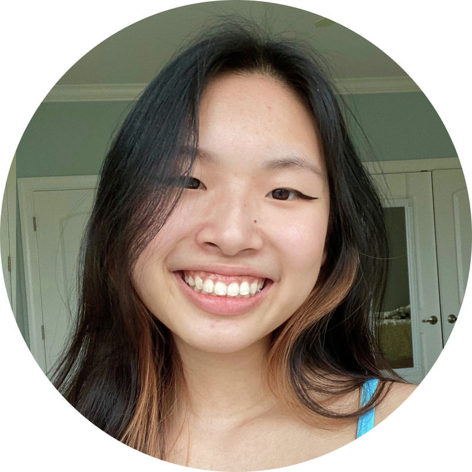

About Me 🙋🏻♀️
Hi, I'm Lianna, an UI/UX Designer from Newtown, Pennsylvania! I'm currently a sophomore studying User Experience and Interaction Design at Drexel University. I'm passionate about designing human-centered solutions that put the user first.
Work Experience
Over the summer of my freshman year, I took an UI Quality Control internship for a health information company called IQVIA. Throughout the duration of the internship, I applied my learned knowledge of user interface design to test the interface from both backend and front end to make sure the user experience was as smooth as possible.
Involvement At School
At Drexel, I'm a member of the Art and CHI UX club. In addition to creative interests such as art and design, I'm also passionate about diversity and inclusion. As a result, I've also joined Drexel's Asian Student Association and Queer Student Union.
Extracurriculars
When I'm not working on school work, I enjoy working in other creative fields such as art, dance, and music. I have danced a variety of styles for many years and play guitar, ukulele, piano, and saxophone in my spare time.